反编译之利用AndroidStudio动态调试smali源码
前言：我们可以利用apktool得到smali源码，可以利用
dex2jar将classes.dex文件编译成.jar文件，然后通过jd-gui工具来查看Java代码，对比着Java代码，基本就可以看懂smali源码了。但有时一个变量的值很难确定，这时候就需要我们通过动态调试来确定不同的条件下这个变量具体的值了。
让apk可调式
  想要调试apk的首要条件就是让这个apk具备可以调试的条件，让apk具备可以调试的方法有两种：
- 反编译apk，修改AndroidManifest.xml的debug属性并在程序的入口处添加
waitForDebugger代码进行调试等待。 - 打开系统调试总开关，使用am命令，以调试模式启动应用。
下面我将详细介绍这两种方法，到底使用哪一种方法，就取决于你们自己了。
通过反编译修改AndroidManifest.xml的debug属性
这一种方法需要对要调试的apk进行反编译，反编译之后找到“AndroidManifest.xml”文件，然后修改debug属性，具体操作如下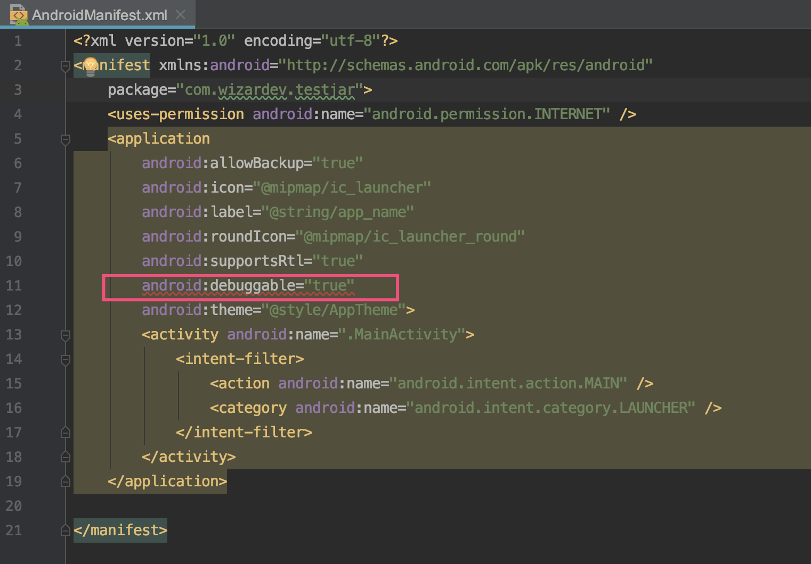如果没有设个属性的话，我们自己增加
android:debuggable="true"这句代码即可.要找到启动apk的启动界面，然后在启动界面的
onCreate方法的第一行添加invoke-static {}, Landroid/os/Debug;->waitForDebugger()V这句代码。那么问题来了，我们怎么知道程序的启动界面呢？其实可以通过以下几种方式：观察“AndroidManifest.xml”文件中的代码，看下图
 如果图中“1”处的代码，那么程序启动界面的smail文件就是“2”处的名称。如上图启动界面的smali文件就是“MainActivity.smali”。然后在“MainActivity.smali”文件中的
如果图中“1”处的代码，那么程序启动界面的smail文件就是“2”处的名称。如上图启动界面的smali文件就是“MainActivity.smali”。然后在“MainActivity.smali”文件中的onCreate方法中添加等待调试的代码即可。通过adb命令来发现apk的启动界面，命令如下
1
adb shell dumpsys activity top
运行命令后会出现以下界面
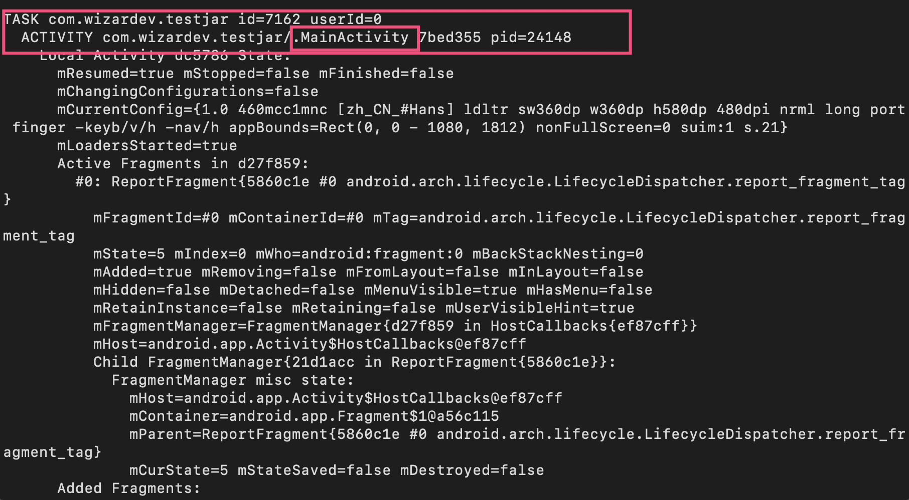图中用红框标记的就是启动界面的smali文件名。注：这种方式找到的启动界面可能不准确，因为有的app会有欢迎页，因此推荐用第一种方法来找app的启动界面。
回编译apk并签名安装到手机，如果启动app出现以下界面，则说明以启动模式运行app成功。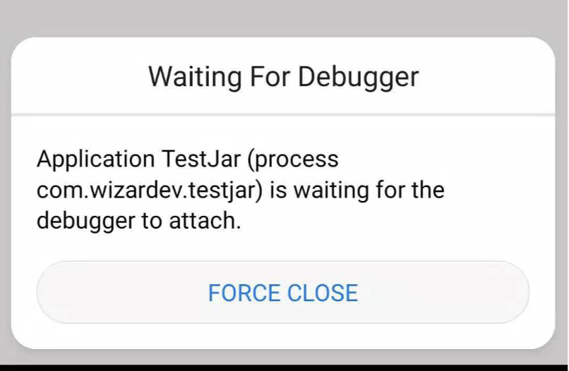
打开系统调试总开关
  这种方法不用修改“AndroidManifest.xml”，而且当你打开这个开关后手机中的所有App都是可以调试的了。但是这种方法操作起来比较复杂，而且手机必须是已经root过的，下面会详细描述怎么打开系统调试的总开关。
  这里会介绍两种方法，第一种方法是大家普遍采用的，但是我使用采用第一种方法没有成功，于是查找资料找到了第二种方法，如果你使用第一种方法不成功，那么可以试下第二种方法。
第一种方法
点击这里下载“mprop”文件。
依次运行一下命令设置“ro.debuggable”
1
2
3
4
5
6adb push “下载mprop文件所在的位置”\mprop /data/local/tmp/
adb shell su
chmod 755 /data/local/tmp/mprop
data/local/tmp/mprop
setprop ro.debuggable 1
/data/local/tmp/mprop -r运行
getprop ro.debuggable命令可以查看debuggable的状态，显示为1，表示更改成功。
注：这种方法在开机后设置的“debuggable”将会失效，需要重新设置
第二种方法
  这种方法其实说复杂也不复杂，说不复杂呢！还是有一点复杂的。具体操作方法如下：
需要手机刷入“Magisk”，刷入方法就想卡刷手机系统一样，可以到这里下载zip包。
Magisk是什么：简单的说就是集成了root的框架，它强大的是root权限还可以设置对其他软件隐藏。Magisk的强大远不止这点，想了解Magisk具有哪些功能可以自行搜索。
通过Magisk安装“MagiskHide Props Config”模块，安装的方法可以看下面的动图。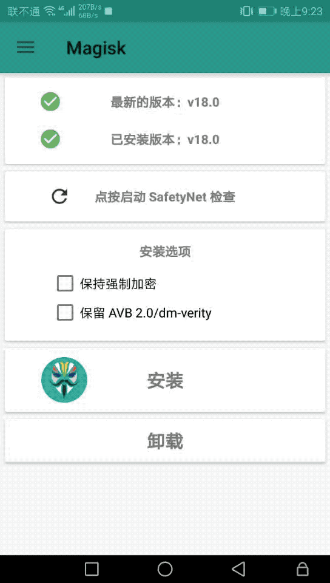
安装完成之后需要重启，才能生效。
打开终端，输入以下命令
1
2adb shell
props会出现这个界面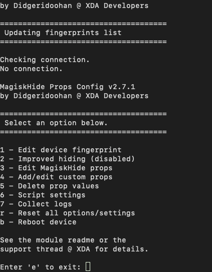
然后，输入3，回车，会出现这个界面
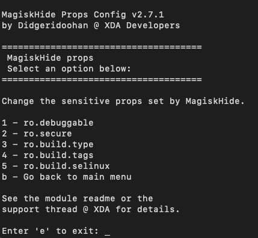然后，输入1，回车，出现这个界面
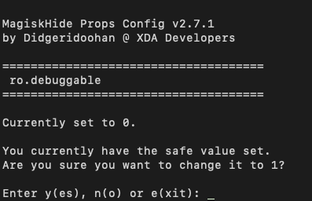可以看到图中显示当前的“ro.debuggable”的值为0，如果要修改为1的话输入“y”，回车即可修改完成。
接着终端会弹出是否重启，这时继续输入“y”重启，重启后修改的“ro.debuggable”才会生效。
经过以上5步，就可以打开系统调试的总开关，这时我们打开“Monitor”工具就可以看见当前运行的所有的所有进程了。
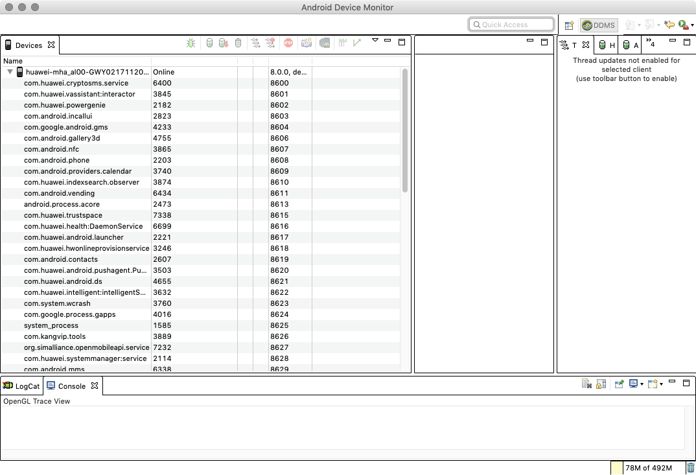注：通过这种方式修改的“ro.debuggable”值，重启手机后不会还原，就是设置过后，手机重启后不需要再次设置。
打开系统调试的总开关后，这时通过am命令以调试模式启动应用，即可让目标应用处于可调式状态。
1 | adb shell am start -D -n xxx |
这里的“xxx”为我们要调试应用的启动界面，如我们要调试应用的启动界面为com.wizardev.testjar/.MainActivity则输入以下命令
1 | adb shell am start -D -n com.wizardev.testjar/.MainActivity |
这是目标应用就会以调试模式运行，处于等待调试的状态。
将目标应用的smali源码导入AndroidStudio
  将smali源码导入AndroidStudio挺简单的，只需要将反编译出来的smali文件夹放在工程项目中的模块的src目录下即可。简单的说一下操作方法吧。
- 新建一个Android项目，不新建项目也行，但需要新建一个module。
- 将项目切换到project视图，将新建的项目下app中src目录下的代码删除或将新建的module下src目录下的代码删除。
- 将我们反编译的smali文件夹放入src目录下。
这样，就讲反编译的smali文件导入到AndroidStudio项目中了。操作后的目录界面大致如下。
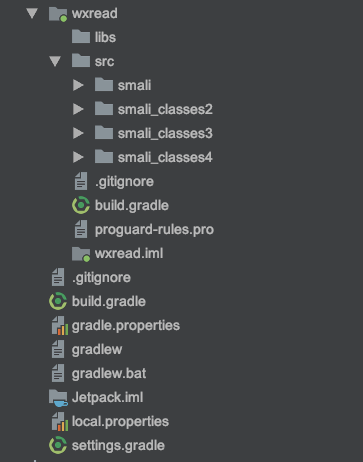运行程序，设置远程调试项目
设置AndroidStudio为远程调试模式
  按下面的步骤操作，将AndroidStudio运行模式设置为远程调试模式。
打开Edit Configurations..

在出现的界面，点击左上角的“+”，在出现的下拉列表中再点击“Remote”
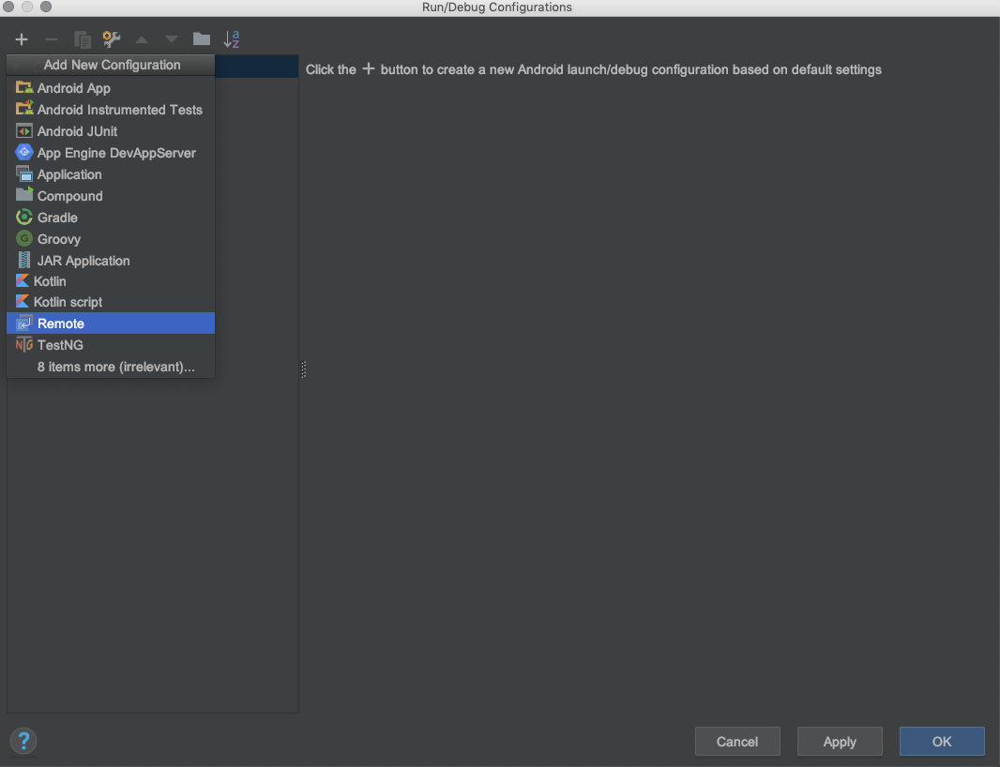设置远程调试的名称和监听远程的端口
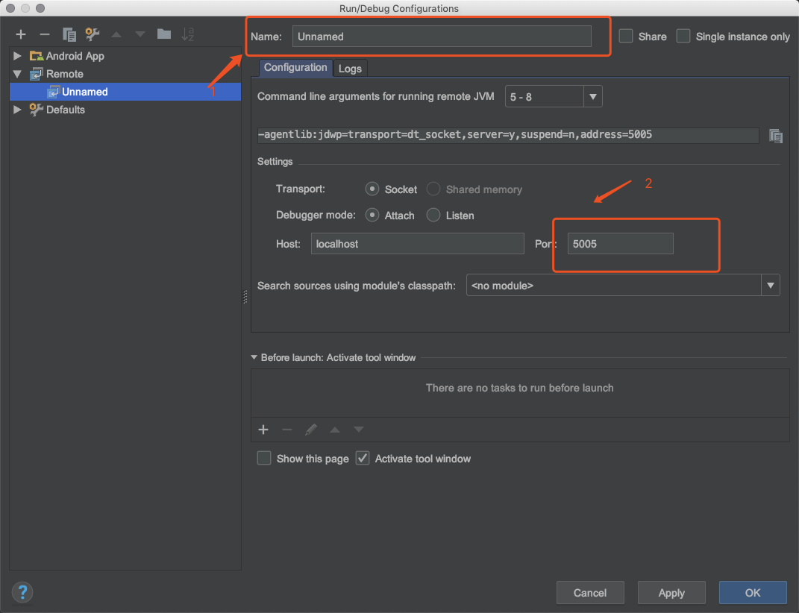在图中1处修改远程调试的名称，不修改直接用默认的也行。在2处修改远程调试服务端监听的端口，一般设置为“8700”，当然也可以设置成当前调试项目所在的端口，可以在“Monitor”工具中查看项目所在的端口。
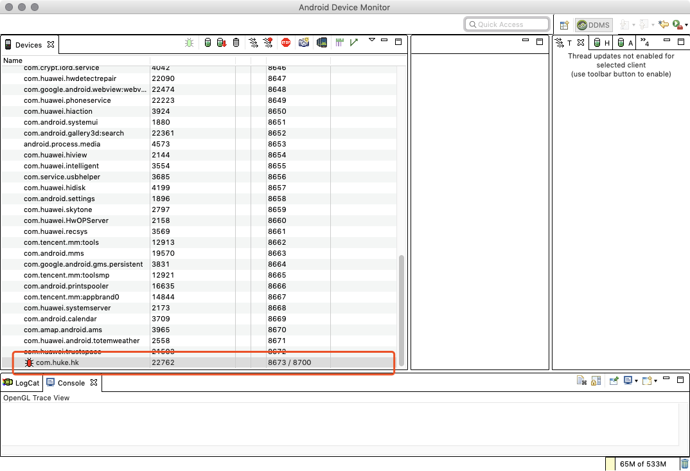可以看到当前调试的项目有两个远程服务端端口，“8700”端口是每个调试程序默认的远程端口，如果不想每次运行程序都重新设置一下端口，2处设置成“8700”就行了，然后点击OK完成修改。这时你会发现可运行的程序中多出了一个你刚才设置的调试项目名称。
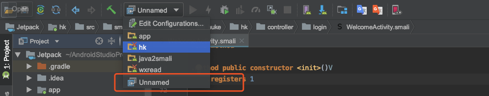如上图，这里我直接使用默认的调试名称，则可运行的项目中多出了一个“Unnamed”选项，我们选中这个就行了，这时Android Studio就在“8700”端口监听项目的运行了。
以调试模式运行并将进程映射到8700端口
用am命令，使目标程序以调试模式运行。
将进程映射到“8700”端口，使用以下命令
1
adb forward tcp:8700 jdwp:进程id
进程id可以在“Monitor”工具中查看，如下图
也可以运行adb命令查看，用adb命令查看进程id的命令如下
1
adb shell ps | grep 包名
完成了以上两步，接着在AndroidStudio点击Debug选项，如下图

然后就可以打断点调试项目了。
注：在点击Debug选项运行项目之前，需要先将“Monitor”工具关掉，否则会提示8700端口被占用，无法进行动态调试项目。
结束语
  动态调试步骤是有点复杂，其实熟悉之后就没多大感觉了，简单设置几下就行了。可能有的手机不能root，这时就只能修改“AndroidManifest.xml”文件了，修改之后不用在程序的启动界面添加代码也行，只要以am命令运行程序就行了。
相关文章：